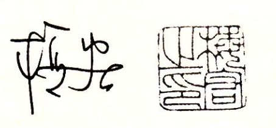

中文版序一
梅宏，中国科学院院士、发展中国家科学院院士
华章公司温莉芳女士邀我为即将出版的《Computer Systems∶A Programmer's Perspective》第 3 版的中文译本《深入理解计算机系统》写个序，出于两方面的考虑，欣然允之。
一是源于我个人的背景和兴趣。我长期从事软件工程和系统软件领域的研究，对计算机学科的认识可概括为两大方面：计算系统的构建和基于计算系统的计算技术应用。出于信息时代国家掌握关键核心技术的重大需求以及我个人专业的本位视角，我一直对系统级技术的研发给予更多关注，由于这种 “偏爱”和研究习惯的养成，以至于自己在面对非本专业领域问题时，也常常喜欢从“系统观”来看待问题和解决问题。我自己也和《深入理解计算机系统》有过“亲密接触”。2012 年，我还在北京大学信息科学技术学院院长任上，学院从更好地培养适应新技术、发展具有系统设计和系统应用能力的计算机专门人才出发，在调查若干国外高校计算机学科本科生教学体系基础上，决定加强计算机系统能力培养，在本科生二年级增设了一门系统级课程，即 "计算机系统导论"。其时，学校正在倡导小班课教学模式，这门课也被选为学院的第一个小班课教学试点。为了体现学院的重视，我亲自担任了这门课的主持人，带领一个 18 人组成的 "豪华" 教学团队负责该课程的教学工作，将学生分成 14 个小班，每个小班不超过 15 人。同时，该课程涉及教师集体备课组合授课、大班授课基础上的小班课教学和讨论、定期教学会议、学生自主习题课和实验课等新教学模式的探索，其中一项非常重要的举措就是选用了卡内基 - 梅隆大学 Randal E. Bryant 教授和 David R. O'Hallaron 教授编写的《Computer Systems∶A Programmer's Perspective》（第 2 版）作为教材，虽然这门课程我只主持了一次，但对这本教材的印象颇深颇佳。
二是源于我和华章公司已有的良好合作和相互了解。2000 年前后，我先后翻译了华章公司引进（机械工业出版社出版）的 Roger Pressman 编写的《Software Engineering：A Practitioner's Approach》一书的第 4 版和第 5 版。其后，在计算机学会软件工程专业委员会和系统软件专业委员会的诸多学术活动中也和华章公司及温莉芳女士本人有不少合作。近二十年来，华章公司的编辑们引进出版了大量计算机学科的优秀教材和学术著作，对国内高校计算机学科的教学改革起到了积极的促进作用，本书的翻译出版仍是这项工作的延续。这是一项值得褒扬的工作，我也想借此机会代表计算机界同仁表达对华章公司的感谢！
计算机系统类别的课程一直是计算机科学与技术专业的主要教学内容之一。由于历史原因，我国的计算机专业的课程体系曾广泛参考 ACM 和 IEEE 制订的计算机科学与技术专业教学计划（Computing Curricula）设计，计算机系统类课程也参照该计划分为汇编语言、操作系统、组成原理、体系结构、计算机网络等多门课程。应该说，该课程体系在历史上对我国的计算机专业教育起了很好的引导作用。
进入新世纪以来，计算技术发生了重要的发展和变化，我国的信息技术和产业也得到了迅猛发展，对计算机专业的毕业生提出了更高要求。重新审视原来我们参照 ACM/IEEE 计算机专业计划的课程体系，会发现存在以下几个方面的主要问题。
1）课程体系中缺乏一门独立的能够贯穿整个计算机系统的基础课程。计算机系统方面的基础知识被分成了很多门独立的课程，课程内容彼此之间缺乏关联和系统性。学生学习之后，虽然在计算机系统的各个部分理解了很多概念和方法，但往往会忽视各个部分之间的关联，难以系统性地理解整个计算机系统的工作原理和方法。
2）现有课程往往偏重理论，和实践关联较少。如现有的系统课程中通常会介绍函数调用过程中的压栈和退栈方式，但较少和实践关联来理解压栈和退栈过程的主要作用。实际上，压栈和退栈与理解 C 等高级语言的工作原理息息相关，也是常用的攻击手段 Bufer Overflow 的主要技术基础。
3）教学内容比较传统和陈旧，基本上是早期 PC 时代的内容。比如，现在的主流台式机 CPU 都已经是 x86-64 指令集，但较多课程还在教授 80386 甚至更早的指令集。对于近年来出现的多核/众核处理器、SSD 硬盘等实际应用中遇到的内容更是涉及较少。
4）课程大多数从设计者的角度出发，而不是从使用者的角度出发。对于大多数学生来说，毕业之后并不会成为专业的 CPU 设计人员、操作系统开发人员等，而是会成为软件开发工程师。对他们而言，最重要的是理解主流计算机系统的整体设计以及这些设计因素对于应用软件开发和运行的影响。
这本教材很好地克服了上述传统课程的不足，这也是当初北大计算机学科本科生教学改革时选择该教材的主要考量。其一，该教材系统地介绍了整个计算机系统的工作原理，可帮助学生系统性地理解计算机如何执行程序、存储信息和通信；其二，该教材非常强调实践，全书包括 9 个配套的实验，在这些实验中，学生需要攻破计算机系统、设计 CPU、实现命令行解释器、根据缓存优化程序等，在新鲜有趣的实验中理解系统原理，培养动手能力；其三，该教材紧跟时代的发展，加入了 x86-64 指令集、Intel Core i7 的虚拟地址结构、SSD 磁盘、IPv6 等新技术内容；其四，该教材从程序员的角度看待计算机系统，重点讨论系统的不同结构对于上层应用软件编写、执行和数据存储的影响，以培养程序员在更广阔空间应用计算机系统知识的能力。
基于该教材的北大“计算机系统导论”课程实施已有五年，得到了学生的广泛赞誉，学生们通过这门课程的学习建立了完整的计算机系统的知识体系和整体知识框架，养成了良好的编程习惯并获得了编写高性能、可移植和健壮的程序的能力，莫定了后续学习操作系统、编译、计算机体系结构等专业课程的基础。北大的教学实践表明，这是一本值得推荐采用的好教材。
该书的第 3 版相对于第 2 版进行了较大程度的修改和扩充。第 3 版从一开始就采用最新 x86-64 架构来贯穿各部分知识，在内存技术、网络技术上也有一系列更新，并且重组了之前的一些比较难懂的内容。我相信，该书的出版，将有助于国内计算机系统教学的进一步改进，为培养从事系统级创新的计算机人才奠定很好的基础。

2016 年 10 月 8 日